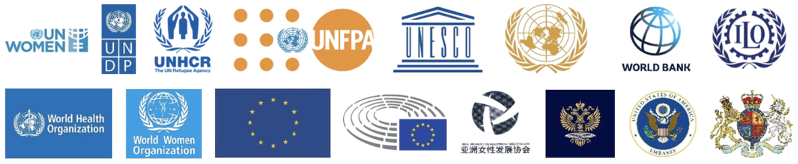
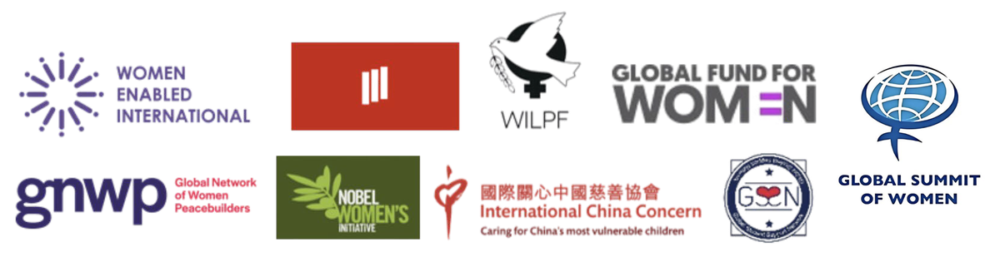
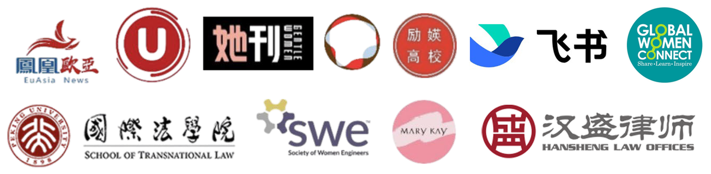

1,000+survivors of violence and discrimination supported
- 310overseas Chinese women helped directly through cases
- 9languages, plus sign language
- 7countries with our legal guides
- 700+support organizations in our database
An international non-profit working to end discrimination and gender-based violence against Asian women overseas, and to open up more chances for them in society, work, culture and education.

End discrimination and gender-based violence against Asian women overseas, and promote their empowerment and development.
A world of love and equality for women.
Asian women are among the largest and fastest-growing communities abroad.
Abroad, as Asians, they meet stereotypes and discrimination.
As women, they face discrimination and gender-based violence.
Being both Asian and women, many of them carry a double weight of stereotypes, discrimination and harm.
20.7 millionoverseas Chinese women at the end of 2019, and they are one community among many
For many women, asking for help means risking money, the right to stay, or their safety.
Abuse at home, at work or at school.
Asking for help can cost money she does not have, or the income she lives on.
When her right to stay rests in someone else's hands, leaving becomes a risk of its own.
Help may exist, but behind a language and a system she cannot easily reach.
Fear of retaliation keeps her silent, and too often keeps her from being believed.
Support built for Asian women abroad is scarce, so help is hard to find in time.
Legal, psychological and practical support.
It is not a lack of will that prevents victims from resisting, but the shortage of resources and the immense risks they face while trying to survive.
A board of directors sets our direction, with committees for audit and expert advice. The Chief Representatives lead nine departments, our five country offices among them.
5 teams, reporting to the Chief Representatives.
6 teams, reporting to the Chief Representatives.
3 teams, reporting to the Chief Representatives.
2 teams, reporting to the Chief Representatives.
Five offices, each with its own teams: 19 teams in all.
Reports straight to the Chief Representatives, with no separate teams.
Departments that work as single units
Reports straight to the Chief Representatives, with no separate teams.
Departments that work as single units
Reports straight to the Chief Representatives, with no separate teams.
Departments that work as single units
Reports straight to the Chief Representatives, with no separate teams.
Departments that work as single units
Figures from our 2025 Five-Year Impact Report.
Given to the Avoice program. The citation: “not about fixing the margins, but about strengthening the foundation.”
At the CSW69 parallel forum, UN Headquarters. Board member Stephanie Sun received the Asian Outstanding Female Leadership Award.
We work with organizations of the UN system, governments, international organizations, companies and universities.




Message the Avoice assistant on WeChat. Tell us your country and a name we can call you; a nickname is fine. In danger right now? Call your local emergency number first.